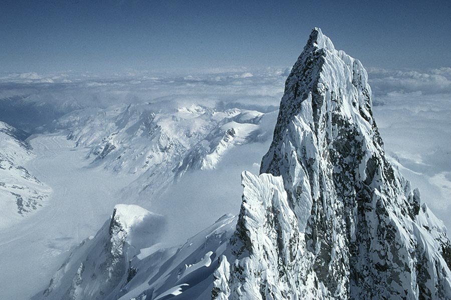
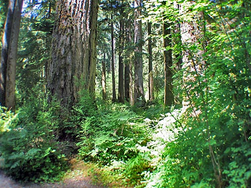
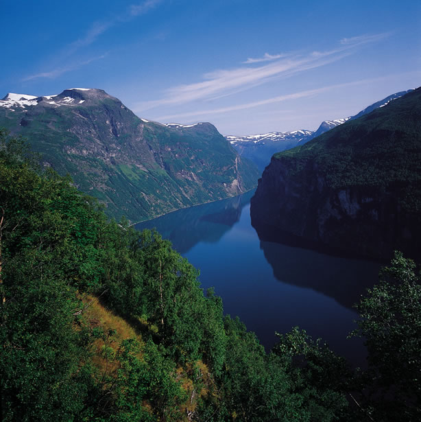

Landforms!
There are many different types of landforms that are present in the Pacific Maritime. Some of the major landforms located in the Pacifc Maritime are the coast mountains, making up most of the ecozone and the lush forests. Some minor landforms include fjords and hot springs. Here are some of them:

The coast mountains are a major mountain range that is located along the coast of British Columbia, approximately 1600 kilometers long and 300 kilometers in width. There is glaciers and snowfields on the summit of the tallest ranges. This is a picture of the tallest mountain in the Pacific Maritime, Mount Waddington, with a height of 4,019 meters.

The Pacific Maritime ecozone climate supports many forests in the ecozone. With the amount of average rainfall that the forests
receive, it makes the forests very lush and some of these forests contain some of the world's tallest, biggest, and oldest trees. This is a
picture of a forest in the Pacific Maritime.

The Pacific Maritime ecozone extends out into the ocean, passing through part of the Ring of Fire. The Ring of Fire is an 40,000km area where most earthquakes occur and where some volcanoes are located. Part of the Ring of Fire is on the coast of British Columbia and the magma in the area is heating up the water creating hot springs in the ecozone. This is a picture of a hotspring located in the Pacific Maritime ecozone.

A fjord is a long and narrow inlet with steep sides formed from a glacier that melted. An inlet is usually long and narrow
and leads to a enclosed body of water such as a lagoon or swamp. This is a picture of a fjord that lies along the coast of British Columbia.